在常见用法中，盐是一种主要由氯化钠(NaCl) 组成的矿物质。当用于食品中，尤其是以颗粒形式使用时，它更正式的名称是食盐。以天然结晶矿物的形式，盐也被称为岩盐或岩盐。盐是生命所必需的（它是必需膳食矿物质钠和氯的来源），咸味是人类的基本味觉之一。盐是最古老、最常见的食物调味品之一，众所周知，它可以均匀地改善食物的味觉。盐腌、卤水和腌制都是古老而重要的食品保存方法。
一些最早的盐加工证据可以追溯到公元前 6000 年左右，当时居住在现罗马尼亚地区的人们煮沸泉水来提取盐；中国的盐场也大约可以追溯到同一时期。[ 1 ]盐受到古代希伯来人、希腊人、罗马人、拜占庭人、赫梯人、埃及人和印度人的珍视。盐成为一种重要的贸易商品，通过船只穿越地中海、沿着专门建造的盐路运输，以及通过骆驼商队穿越撒哈拉沙漠运输。盐的稀缺性和普遍需求导致各国为争夺盐发动战争并利用它来增加税收，例如19 世纪 60 年代末在埃尔帕索发生的埃尔帕索盐战争。[ 2 ]盐用于宗教仪式并具有其他文化和传统意义。
盐是从盐矿中开采出来的，也可以通过蒸发浅池中的海水（海盐）和富含矿物质的泉水来加工而成。盐（氯化钠）最大的单一用途是作为生产化学品的原料。 [ 3 ]它用于生产苛性钠和氯，以及制造聚氯乙烯、塑料和纸浆等产品。在全球每年约三亿吨的产量中，只有一小部分用于人类消费。其他用途包括水调节过程、高速公路除冰和农业用途。[ 4 ] [ 5 ]食用盐以海盐和食盐等形式出售，后者通常含有抗结剂，可以加碘以防止碘缺乏。除了用于烹饪和餐桌外，盐还存在于许多加工食品中。
钠是人体健康所必需的元素，它作为电解质和渗透性溶质发挥作用。[ 6 ] [ 7 ] [ 8 ]然而，过量摄入盐会增加患高血压等心血管疾病的风险。盐的此类健康影响早已被研究。因此，许多世界卫生组织和发达国家的专家建议减少常见的咸味食物的摄入量。[8] [9] 世界卫生组织建议成年人每日钠摄入量应少于 2000 毫克，相当于 5 克盐。[ 10 ] [ 11 ]
历史
 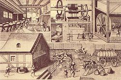
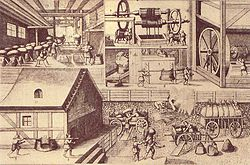
 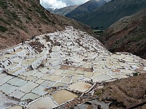
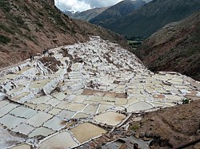
纵观历史，盐的供应一直是文明的关键。现在被认为是欧洲第一个城市是保加利亚的索尔尼察塔，它曾是一座盐矿，自公元前 5400 年以来一直为现在的巴尔干地区提供盐。 [ 12 ]几千年来，盐都是最著名的食品防腐剂，尤其是肉类的防腐剂。[ 13 ]在罗马尼亚尼亚姆茨县伦卡的盐泉旁的波亚纳斯拉蒂内考古遗址发现了一个非常古老的盐场。证据表明，早在公元前 6050 年，新石器时代的普雷库库特尼文化人就通过压块工艺煮沸含盐的泉水来提取盐。 [ 14 ]通过这种操作提取的盐可能与该社会在生产开始后不久人口的快速增长直接相关。[ 15 ]中国山西运城附近谢池湖水面采盐的历史至少可以追溯到公元前 6000 年，这使得它成为可证实的最古老的盐场之一。[ 16 ]
动物组织（如肉、血和奶）中的盐含量比植物组织中的多。[ 17 ] 靠放牧羊群为生的游牧民族不吃盐，但主要以谷物和植物为食的农民需要在饮食中补充盐。[ 18 ]随着文明的传播，盐成为世界主要贸易商品之一。它对古希伯来人、希腊人、罗马人、拜占庭人、赫梯人和其他古代民族来说都具有很高的价值。在中东，盐被用来在仪式上签署协议，古希伯来人与上帝立下“盐约”，并在祭品上撒盐，以表示对上帝的信任。[ 19 ]古代战争时期的一种做法是在地上撒盐：在战败的城市周围撒盐，象征性地阻止植物生长。圣经中讲述了亚比米勒王奉上帝之命在示剑做这件事的故事[ 20 ]，也有各种文献声称，罗马将军西庇阿·埃米利亚努斯·阿非利加努斯在第三次布匿战争（公元前 146 年）中战败后，在迦太基城上耕种并撒上盐[ 21 ] ，不过这个故事现在被认为完全是伪经。
新石器时代，盐可能在安纳托利亚的黑曜石贸易中被用于易货贸易。[ 22 ]公元前三千年起，在古埃及墓葬中发现的陪葬品中就有盐，还有腌鸟和咸鱼。 [ 23 ]大约从公元前 2800 年开始，埃及人开始向腓尼基人出口咸鱼，以换取黎巴嫩雪松、玻璃和染料泰尔紫；腓尼基人则在其地中海贸易帝国的各地交易埃及咸鱼和来自北非的盐。 [ 24 ]希罗多德早在公元前 5 世纪就描述了横跨利比亚的盐贸易路线。在罗马帝国早期，修建了道路，用于将盐从奥斯蒂亚进口到首都。[ 25 ]
在非洲，撒哈拉以南地区用盐作为货币，在阿比西尼亚，岩盐板则被用作硬币。[ 18 ]图阿雷格人传统上一直维护着穿越撒哈拉的路线，特别是用于由盐商队（Azalai ）运输盐的路线。这些盐商队至今仍从尼日尔南部穿越沙漠到达比尔马，尽管现在很多贸易都是通过卡车进行的。每头骆驼向北驮着两包饲料和两包贸易货物，返回时则满载着盐柱和椰枣。[ 26 ]在加蓬，在欧洲人到来之前，沿海地区的人通过海盐与内陆地区的人进行有偿贸易。这种贸易逐渐被欧洲人用麻袋运来的盐所取代，因此沿海地区的土著人失去了以前的利润；截至 20 世纪 50 年代末，海盐仍然是内陆地区最受欢迎的货币。[ 27 ]
萨尔茨堡、哈尔施塔特和哈莱因位于奥地利中部萨尔察赫河畔，相距不到 17 公里（11 英里），该地区盐矿储量丰富。萨尔察赫的意思是“盐河”，而萨尔茨堡的意思是“盐堡”，它们的名字都源于德语单词Salz（盐）。哈尔施塔特是世界上第一个盐矿的所在地。[ 28 ]这座小镇的名字赋予了哈尔施塔特文化，该文化于大约公元前 800 年开始在该地区开采盐矿。大约公元前 400 年，镇上的人从之前使用镐和铲子开始露天制盐。在公元前一千年，凯尔特人社区通过向古希腊和古罗马贩卖盐和腌肉来换取葡萄酒和其他奢侈品而变得富裕。 [ 13 ]
“薪水”（salary）一词源于拉丁语，意为“盐”。其原因尚不清楚；现代一直流传的说法认为，罗马军团有时会以盐的形式发放薪水，但这毫无根据。[ 29 ] [ 30 ] “沙拉”（salad）一词的字面意思是“腌制的”，源于古罗马人用盐腌制叶类蔬菜的做法。[ 31 ]
为了争夺盐，战争从未停止。威尼斯在 1304 年与帕多瓦争夺某些地区的盐矿供应权，也因为同样的原因赢得了费拉拉战争（1482-1484 年） 。 [ 32 ] [ 33 ]威尼斯在美国独立战争和圣埃利萨里奥盐战中发挥了作用。陆上贸易路线上的城市通过征收关税而变得富裕，[ 32 ]利物浦等城镇则因出口从柴郡盐矿开采的盐而繁荣起来。[ 34 ]各国政府在不同时期向其人民征收盐税。据说克里斯托弗·哥伦布的航行资金来自西班牙南部的盐产，而法国苛刻的盐税是法国大革命的起因之一。这项税项在被废除后，拿破仑登基为皇帝后又重新征收，以支付其对外战争的费用，直到1946年才最终废除。[ 32 ] 1930年，圣雄甘地率领十万名抗议者进行了“丹迪游行”或“食盐非暴力不合作运动”，他们用海水自产食盐，以抗议殖民时期征收的盐税。这场公民抗命行动激励了无数印度人，并将印度独立运动发展成为一场民族斗争。[ 35 ]
物理特性
.jpg?_x_tr_sl=en&_x_tr_tl=zh-CN&_x_tr_hl=zh-CN&_x_tr_pto=wapp) 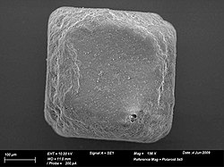
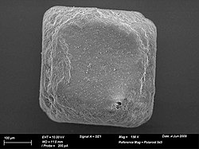
盐的主要成分是氯化钠(NaCl)。海盐和矿盐可能含有微量元素。矿盐通常经过精炼。盐晶体呈半透明立方体状；它们通常呈白色，但杂质可能会使它们呈现蓝色或紫色。氯化钠溶于水时会分离成 Na +和 Cl −离子，溶解度为每升 359 克。[ 36 ]在冷溶液中，盐会结晶为二水合物NaCl·2H 2 O。氯化钠溶液的性质与纯水的性质截然不同； 23.31 wt% 的盐的凝固点为 −21.12 °C (−6.02 °F)，饱和盐溶液的沸点约为 108.7 °C (227.7 °F)。[ 3 ]
食用盐
 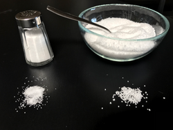
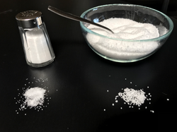
盐对人类和其他动物的健康至关重要，它是五种基本味觉之一。[ 37 ]众所周知，它能全面改善食物的味觉，包括原本不美味的食物。[ 38 ]许多菜肴中都会用到盐，食客们在餐桌上自备的盐瓶中也经常会用到盐。盐也是许多制成品食品的配料。食盐是精制盐，含有约 97% 至 99% 的氯化钠。[ 39 ] [ 40 ] [ 41 ]通常，会添加抗结剂，如铝硅酸钠或碳酸镁，使其自由流动。含碘化钾的碘盐随处可见。有些人会在盐瓶中放入干燥剂，如几粒生米[ 42 ]或一块咸饼干，来吸收多余的水分，帮助分解可能形成的盐块。[ 43 ]
强化食盐
一些出售的食用食盐含有添加剂，这些添加剂可以解决各种健康问题，尤其是在发展中国家。添加剂的种类和含量因国家而异。碘是人体重要的微量营养素，缺乏碘会导致成人甲状腺素分泌减少（甲状腺功能减退症）和甲状腺肿大（地方性甲状腺肿），或儿童患上克汀病。[ 44 ]自 1924 年以来，碘盐就一直用于纠正这些疾病[ 45 ]。碘盐由食盐与微量碘化钾、碘化钠或碘酸钠混合而成。可以添加少量葡萄糖来稳定碘。[ 46 ]碘缺乏症影响着全世界约 20 亿人，是导致智力障碍的主要可预防原因。[ 47 ]碘盐在使用国显著减少了碘缺乏病的发病率。[ 48 ]
盐中添加的碘量和特定碘化合物各不相同。美国食品药品监督管理局( FDA) 建议男性和女性每日摄入150微克碘。 [ 49 ]美国碘盐的碘含量为 46-77 ppm（百万分率），而英国碘盐的推荐碘含量为 10-22 ppm。[ 50 ]
有时会将亚铁氰化钠（黄色亚铁氰化钠）添加到盐中作为抗结剂。[ 51 ]至少从 1911 年起，人们就开始在盐中添加此类抗结剂，当时人们首次将碳酸镁添加到盐中，使其更自由地流动。[ 52 ] 1988 年，毒性委员会暂时认可亚铁氰化钠作为食品添加剂的安全性。 [ 51 ]有时使用的其他抗结剂包括磷酸三钙、碳酸钙或碳酸镁、脂肪酸盐（酸式盐）、氧化镁、二氧化硅、硅酸钙、铝硅酸钠和铝硅酸钙。欧盟和美国食品药品监督管理局都允许在后两种化合物中使用铝。 [ 53 ]
在“双倍强化盐”中，碘盐和铁盐都会被添加。铁盐可以缓解缺铁性贫血，这种疾病会影响发展中国家约40%婴儿的智力发育。富马酸亚铁是一种典型的铁源。[ 3 ]另一种对孕妇尤其重要的添加剂是叶酸（维生素B9 ），它使食盐呈现黄色。叶酸有助于预防神经管缺陷和贫血，这些疾病对年轻母亲，尤其是在发展中国家的母亲，影响巨大。[ 3 ]
饮食中缺乏氟化物是导致龋齿发病率大幅上升的原因。[ 54 ] 可以在食盐中添加氟化盐，以减少蛀牙，尤其是在那些尚未使用含氟牙膏和含氟水的国家。这种做法在一些尚未进行水氟化的欧洲国家更为常见。在法国，市售食盐中有35%添加了氟化钠。[ 3 ]
其他种类

 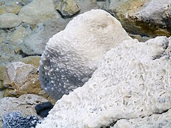
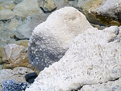未精制海盐含有少量镁和钙的 卤化物和硫酸盐、微量藻类产物、耐盐细菌和沉积物颗粒。钙盐和镁盐赋予未精制海盐淡淡的苦味，并使海盐具有吸湿性（即，如果未加盖储存，它会逐渐吸收空气中的水分）。藻类产物会产生轻微的“鱼腥味”或“海风味”，后者来自有机溴化合物。沉积物（其比例因来源而异）使盐呈现暗灰色。由于人类通常可以在微量浓度下检测到味道和香气化合物，因此撒在食物上的海盐可能比纯氯化钠具有更复杂的味道。然而，如果在烹饪过程中添加盐，这些味道可能会被食物成分的味道所掩盖。[ 55 ]精制盐行业引用科学研究称，未经处理的海盐和岩盐中碘盐的含量不足以预防碘缺乏病。[ 56 ]
盐的矿物质含量因其来源而异，这赋予了每种盐独特的风味。盐之花 (Fleur de sel)是一种来自盐田中蒸发盐水表面的天然海盐，其风味随来源不同而不同。在韩国传统料理中，所谓的“竹盐”是将盐放入两端塞满泥土的竹容器中烘烤而成[ 57 ]。这种产品吸收了竹子和泥土中的矿物质，据称可以增强大酱（一种发酵豆酱）的抗癌和抗诱变特性[ 58 ] 。犹太盐或厨房盐的颗粒比食盐更大，用于烹饪。它可以用来腌制，制作面包或椒盐卷饼，与油混合后还可以用作擦洗剂[ 59 ] 。
食物中的盐
盐存在于大多数食物中，但在肉类、蔬菜和水果等天然食物中含量极少。它通常被添加到加工食品中（例如罐头食品，尤其是盐渍食品、腌制食品、零食或其他方便食品） ，既起到防腐剂的作用，又起到调味剂的作用。乳制品用盐用于制作黄油和奶酪制品。[ 60 ]作为一种调味剂，盐可以抑制其他食物的苦味，使其更可口、相对更甜，从而提升其口感。[ 61 ]
在电力制冷出现之前，腌制是食品保存的主要方法之一。例如，每100克鲱鱼含67毫克钠，而腌制后的腌鱼含990毫克钠。同样，每100克猪肉通常含63毫克钠，培根含1480毫克，土豆含7毫克，而薯片含800毫克。[ 17 ]盐在烹饪中被广泛用于调味，也用于诸如盐脆皮和卤水等烹饪方法。除了直接食用外，西方饮食中盐的主要来源是面包、谷类食品、肉类和奶制品。[ 17 ]
在许多东亚文化中，盐传统上不被用作调味品。[ 62 ]取而代之的是酱油、鱼露和蚝油等调味品，这些调味品往往钠含量较高，在西方文化中的作用与食盐相似。它们通常用于烹饪，而不是餐桌调味品。[ 63 ]
咸味生物学
人类的咸味是由舌头味蕾细胞中的钠味觉受体感知的。 [ 64 ]人类感官味觉测试研究表明，蛋白水解的上皮钠通道(ENaC) 可作为人类的咸味受体。[ 65 ]
钠的摄入与健康
按重量计算，食盐的钠含量略低于 40%，因此 6 克（1 茶匙）食盐约含 2,400 毫克钠。[ 66 ]钠在人体中起着至关重要的作用：它作为电解质，帮助神经和肌肉正常运作，并且是参与调节体内器官水分渗透压（体液平衡）的一个因素。 [ 67 ]西方饮食中的大部分钠来自盐。[ 8 ]许多西方国家的习惯性每日盐摄入量约为 10 克，高于许多东欧和亚洲国家的摄入量。[ 68 ]许多加工食品中的高钠含量对总摄入量有重大影响。[ 69 ]在美国，75% 的钠摄入量来自加工食品和餐馆食品，11% 来自烹饪和餐桌，其余来自食物中的天然钠。[ 70 ]
由于摄入过多的钠会增加罹患心血管疾病的风险，[ 8 ]卫生组织通常建议人们减少饮食中的盐摄入量。[ 8 ] [ 10 ] [ 71 ] [ 72 ]高钠摄入量与中风、心血管疾病和肾脏疾病的风险增加相关。[ 7 ] [ 68 ]每天减少 1000 毫克钠摄入量可使心血管疾病减少约 30%。[ 6 ] [ 8 ]对于没有急性疾病的成人和儿童，从典型的高水平减少钠摄入量可降低血压。[ 71 ] [ 73 ]低钠饮食可使高血压患者的血压得到更大改善。[ 74 ] [ 75 ]
世界卫生组织建议， 成年人每日钠摄入量应少于 2000 毫克（5 克盐中含有钠）。 [ 10 ]美国指南建议，高血压患者、非裔美国人以及中老年人每日钠摄入量应限制在 1500 毫克以内，并通过健康的水果和蔬菜饮食满足每日 4700 毫克钾的推荐摄入量。[ 8 ] [ 76 ]
虽然发达国家建议将钠摄入量减少到每天 2300 毫克以下，[ 8 ] 但一项研究建议将钠摄入量减少到 每天至少 1200 毫克（每 3 克盐含钠），因为进一步减少盐摄入量可使所有年龄组和种族的收缩压更大幅度下降。[ 71 ]另一项研究指出，目前尚无一致或不足的证据来断定将钠摄入量减少到每天 2300 毫克以下是有益还是有害。[ 77 ]
证据表明，盐与心血管疾病之间的关系更为复杂。“钠摄入量与心血管疾病或死亡率之间的关联呈U型曲线，高钠摄入量和低钠摄入量均会增加风险。” [ 78 ]研 究结果表明，过量盐摄入导致的死亡率增加主要与高血压患者有关。限制盐摄入量的人群中，无论血压如何，死亡率的增加程度似乎相似。这一证据表明，虽然高血 压患者应主要关注将钠摄入量降至推荐水平，但所有人群都应努力将每日钠摄入量保持在4至5克（相当于10至13克盐）的健康水平。[ 78 ]
世界上最突出的两大致残饮食风险之一是高钠饮食。[ 79 ]
非饮食用途
全世界生产的盐只有一小部分用于食品。其余的用于农业、水处理、化学品生产、除冰和其他工业用途。[ 3 ]在用盐作为肥料浇灌植物时，施用中等浓度有助于避免潜在的毒性；通常，每升 1-3 克（0.035-0.106 盎司）的盐被认为对大多数植物是安全有效的。[ 80 ] [ 81 ] [ 82 ]氯化钠是最广泛使用的无机原料之一。它是生产苛性钠和氯的原料。这些用于制造PVC、纸浆和许多其他无机和有机化合物。盐在铝生产中用作熔剂。为此，一层熔融的盐漂浮在熔融金属的顶部，并去除铁和其他金属污染物。它用于制造肥皂和甘油，并用于皂化脂肪。作为乳化剂，盐用于制造合成橡胶，另一个用途是烧制陶器。将盐加入炉中，盐会蒸发，然后凝结在陶瓷材料表面，形成坚固的釉料。[ 83 ]
在钻穿沙子或砾石等松散物质时，可以在钻井液中加入盐，形成一道稳定的“壁”，防止钻孔坍塌。盐在许多其他工艺中也发挥着作用，例如用作纺织品染色的媒染剂、软化水过程中再生树脂、鞣制生皮、保存肉类和鱼类，以及制作肉类和蔬菜的罐头。[ 83 ] [ 84 ] [ 85 ]
生产

食品级盐仅占工业化国家食盐产量的一小部分（欧洲为 7%），[ 86 ]尽管在全球范围内，食品用途占总产量的 17.5%。[ 87 ] 2018 年，全球食盐总产量为 3 亿吨，前六大生产国分别为中国（6800 万吨）、美国（4200 万吨）、印度（2900 万吨）、德国（1300 万吨）、加拿大（1300 万吨）和澳大利亚（1200 万吨）。[ 88 ]
盐的生产是最古老的化学工业之一。[ 89 ]盐的主要来源是海水，其盐度约为 3.5%。[ 3 ]这意味着水中溶解有约 35 克（1.2 盎司）的盐，主要是钠（Na+
)和氯化物( Cl−
)离子，每公斤（2.2 磅）水。[ 90 ]世界海洋几乎是取之不尽的盐源，如此丰富的供应意味着储量尚未计算。[ 84 ]海水蒸发是蒸发率高、降水率低的海洋国家的首选生产方法。盐蒸发池从海水中注满盐，当水干涸时，就可以收获盐晶体。有时这些池塘会呈现出鲜艳的色彩，因为某些藻类和其他微生物在高盐度条件下茁壮成长。[ 91 ]
远离海洋，盐是从数千年来海水和湖泊蒸发沉积而成的大量沉积物中提取的。这些沉积物要么直接开采，生产出岩盐，要么通过将水泵入沉积物中提取。无论哪种情况，都可以通过盐水的机械蒸发来净化盐。传统上，净化是在浅的敞口锅中进行的，加热以加速蒸发。也会使用基于真空的方法。 [ 85 ]用化学物质处理原盐以沉淀大部分杂质（主要是镁盐和钙盐），从而进行精炼。然后进行多阶段蒸发。[ 92 ]一些盐是使用阿尔伯格法生产的，该法结合真空锅蒸发和用立方晶体接种溶液，产生粒状薄片。[ 93 ]巴拉圭查科地区的土著民族阿约雷奥 (Ayoreo)从燃烧印度盐树 ( Maytenus vitis-idaea ) 和其他树木的木材后产生的灰烬中获取盐。[ 94 ]
世界上最大的地下矿场是西夫托盐矿，其大部分位于加拿大安大略省戈德里奇，休伦湖下方550米处。每年约有700万吨盐从这里开采出来。[ 95 ]巴基斯坦的克乌拉盐矿共有19层，其中11层位于地下，矿道总长400公里（250英里）。盐矿采用房柱式开采法开采，约一半的盐被留在原地支撑上层。以目前每年约38.5万吨的开采速度计算，喜马拉雅盐的开采量预计将持续350年。该盐矿也是一个重要的旅游景点，每年接待约25万游客。[ 96 ]
 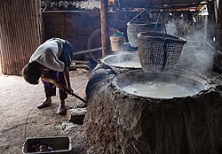
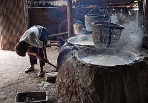 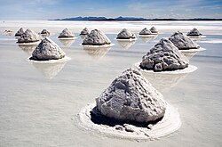
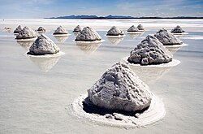 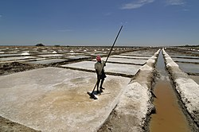
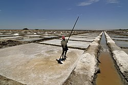 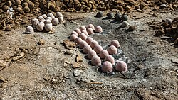
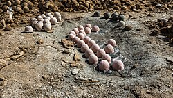_(Billianwala_Salt_Member,_Salt_Range_Formation,_Ediacaran_to_Lower_Cambrian;_Khewra_Salt_Mine,_Salt_Range,_Pakistan)_14.jpg?_x_tr_sl=en&_x_tr_tl=zh-CN&_x_tr_hl=zh-CN&_x_tr_pto=wapp){kind=link}
在宗教中
 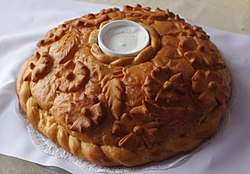
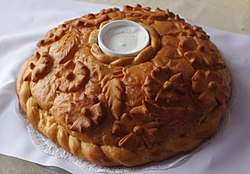
盐在宗教和文化中一直占有重要地位。在婆罗门祭祀、赫梯仪式以及闪米特人和希腊人在新月时举行的节日中，人们都会将盐扔进火中，发出噼啪声。[ 97 ]古埃及人、希腊人和罗马人用盐和水作为祭品来祈求他们的神灵，有些人认为这就是基督教信仰中圣水的起源。 [ 98 ]在犹太教中，建议在安息日举行基杜什（Kiddush）时吃咸面包，或者如果面包没有加盐，则在面包上加盐。基杜什后，按照习俗，在面包上涂抹一些盐，或者在面包上蘸一点盐，把面包传递到餐桌上。[ 99 ]为了维护他们的人民与上帝之间的契约，犹太人会将安息日面包蘸上盐。[ 98 ]盐在不同的基督教传统中扮演着不同的角色。在特伦托弥撒仪式中，盐是必需的。[ 100 ]凯尔特圣化仪式（参见高卢仪式）的第三项（包括驱魔）中会用到盐，该仪式用于教堂的圣化。在罗马天主教的圣水仪式中，也允许在“习惯”的情况下将盐添加到水中。[ 100 ]圣经多次提到盐，既指这种矿物质本身，也用作比喻。例如，罗得的妻子回头望向被毁灭的所多玛和蛾摩拉，便变成了一根盐柱。在《新约》中，耶稣称他的追随者为“世上的盐”。[ 101 ]
在阿兹特克神话中， Huixtocihuatl是掌管盐和盐水的生育女神。[ 102 ]盐在印度教中是一种吉祥之物，常用于乔迁庆宴和婚礼等仪式。[ 103 ]在耆那教中，信徒会在神像前供奉生米和一小撮盐，以示虔诚。在骨灰埋葬之前，人们也会在火化后的遗体上撒盐。[ 104 ]大乘佛教传统认为盐可以避邪。参加完葬礼回家时，人们会在左肩后撒一小撮盐，这样可以防止邪灵进入屋内。[ 105 ]在神道教中，盐（㡩，字面意思是“盐”）用于净化场所和人的仪式（harae，特别是shubatsu），人们会在入口处的盘子里放一小堆盐，以避邪并吸引顾客。[ 106 ]
参考
- ^ 盐：一部世界历史。
- ^ 埃尔帕索盐战（美国国家公园管理局） . www.nps.gov . 检索日期：2025年2月25日。
- ^ a b c d e f g跳转至： Westphal 等人（2010 年）。
- ^ “盐的作用原理及除冰化学品概述——明尼苏达州雨水手册” 。stormwater.pca.state.mn.us。检索日期： 2025年2月25日。
- ^ jdlanier (2016年1月15日)。“盐对植物的影响以及如何减少冬季施盐对植物的伤害”。农业、食品和环境中心。检索日期：2025年2月25日。
- ^ a b跳转至： 2015年膳食指南咨询委员会科学报告（PDF）。美国农业部。2015年，第7页。原件存档日期（PDF） 2016年4月18日。
- ^ a b跳转至： 人 群钠摄入量减少后果委员会；食品营养委员会；人口健康公共卫生实践委员会；美国医学研究所；Strom, BL；Yaktine, AL；Oria, M. (2013)。Strom, Brian L.；Yaktine, Ann L.；Oria, Maria (eds.)。人群钠摄入量：证据评估。美国国家科学院医学研究所。doi ： 10.17226 / 18311。ISBN 978-0-309-28295-6。PMID 24851297。 原著存档于 2013 年 10 月 19 日。检索日期：2013年10 月 17 日。
- ^ a b c d e f g h跳转至： “大多数美国人应该减少钠的摄入”。盐。美国疾病控制与预防中心。原版存档于2013年10月19日。检索日期：2013年10月17日。
- ^ “EFSA 就钠的不良影响提供建议”。欧洲食品安全局。2005 年 6 月 22 日。原著存档于 2017 年 8 月 4 日。2016年6 月 9 日检索。
- ^ a b c跳转至： “世卫组织发布关于膳食盐和钾的新指导”。世界卫生组织。2013年1月31日。原著存档于2016年7月20日。 2013年10月17日检索。
- ^ Delahaye, F. (2012)。“欧洲 PMC”。Presse Médicale。41 (6 Pt 1): 644–649。doi: 10.1016/j.lpm.2012.02.035。PMID 22465720。原著存档于2021年 6 月 7 日。检索日期：2021年6月7 日。
- ^ 《洛杉矶时报》
保加利亚人发现欧洲最古老的城镇，一个盐生产中心， 2019 年 5 月 4 日 存档于Wayback Machine - ^ a b跳转至： Barber（1999），第 136 页。
- ^ Weller & Dumitroaia (2005)。
- ^ Weller，Brigand＆Nuninger（2008），第225-30页。
- ^ Kurlansky（2002），第 18-19 页。
- ^ a b c跳转至： Buss, David；Robertson, Jean (1973).营养手册. 英国女王办公室. 第 37–38页. ISBN 978-0-11-241112-3。
- ^ a b跳转至： Wood, Frank Osborne。“盐（NaCl）”。大英百科全书在线版。原著存档于2015年5月2日。检索日期：2013年10月9日。
- ^ Suitt, Chris。“盐之约”。重新发现旧约。亚伯拉罕种子事工。原著存档于2016年3月5日。 2013年10月12日检索。
- ^ Gevirtz, Stanley (1963) 。 “耶利哥与示剑：城市毁灭的宗教文学层面”。《旧约全书》。13 ( 1): 52–62。doi : 10.2307/1516752。JSTOR 1516752。
- ^ 里普利，乔治；达纳，查尔斯·安德森（1863）。《新美国百科全书：通俗常识词典》。第4卷，第497页。（原文存档于2015年9月6日）
- ^ Golbas, Alper；Basobuyuk, Zeynel (2012)。“盐在安纳托利亚文化形成中的作用”。巴特曼大学：生命科学杂志。1 (1): 45–54。（原文存档于2013年12月11日）
- ^ Kurlansky（2002），第 38 页。
- ^ Kurlansky (2002)，第 44 页。
- ^ “盐的简史”。《时代》杂志。1982年3月15日。原著存档于2016年5月9日。 2013年10月11日检索。
- ^ Paolinelli, Franco. “非洲尼日尔的图阿雷格盐商队”。布拉德肖基金会。原著存档于 2016 年 8 月 3 日。2013年10 月 11 日检索。
- ^ 施魏策尔，阿尔伯特（1958）。《非洲笔记》。印第安纳大学出版社。
- ^ 洛佩兹，比莉·安。“哈尔施塔特的白金：盐”。虚拟维也纳网络。原著存档于2007年2月10日。 2013年3月3日检索。
- ^ 布洛赫，大卫。“氯化钠的经济学：盐让世界运转”。布洛克先生档案。原件存档于2007年1月29日。检索日期： 2006年12月19日。
- ^ “德罗伊特威奇温泉的盐生产历史”。英国广播公司（BBC）。2010年1月21日。原著存档于2014年2月22日。 2011年3月28日检索。
- ^ Kurlansky (2002)，第 64 页。
- ^ a b c跳转至： Cowen, Richard (1999年5月1日)。《盐的重要性》。原著存档于2016年5月7日。 2013年10月15日检索。
- ^ 丰塔纳，埃马努埃莱（2014）。 “PAOLINO da Venezia，vescovo di Pozzuoli”。Dizionario Biografico degli Italiani - 第 81 卷。特雷卡尼。
- ^ Smith, Mike (2003)。“盐”。好与不好：Lineside Industries。原著存档于2011年11月24日。 2013年10月15日检索。
- ^ Dalton（1996），第 72 页。
- ^ Wood, Frank Osborne；Ralston, Robert H. “盐（NaCl）”。大英百科全书。原著存档于2015年5月2日。 2013年10月16日检索。
- ^ “味觉” 。2013年3月16日。原著存档于2016年4月8日。 2013年10月16日检索。
- ^ 美国医学研究所降低钠摄入量策略委员会 (2010)。“3——钠在食品中的味道和风味作用：降低钠摄入量的独特挑战”。Jane E. Henney、Christine L. Taylor 和 Caitlin S. Boon 编。《美国降低钠摄入量的策略》。华盛顿特区：美国国家科学院出版社。ISBN ： 978-0-309-14806-1。原件存档于 2021 年 5 月 9 日。检索日期：2022 年10 月 29 日。
- ^ “Tesco 食盐 750 克”。Tesco。原件存档于 2009 年 5 月 11 日。检索日期：2010 年12 月 5 日。Tesco
食盐的营养分析显示，其钠含量为 38.9%（按重量计算），相当于 97.3% 的氯化钠。
- ^ 食盐2007年8月5日 存档于Wayback Machine。Wasalt.com.au。2011年7月7日检索。
- ^ 《国际食品法典食品级盐标准》 （PDF格式）， 2012年3月14日存档于Wayback Machine。检索日期：2011年7月7日。
- ^ “盐瓶里的米饭”。问问科学家。原件存档于2011年3月14日。2008年7月29日检索。
- ^ “食品新鲜度” 。KOMO 新闻。原版存档于 2011 年 8 月 20 日。2011年7 月 8 日检索。
- ^ Vaidya、Chakera 和 Pearce (2011)。
- ^ Markel（1987）。
- ^ “罐装和腌制盐”。宾夕法尼亚州立大学。原件存档于2013年4月7日。 ； “常见问题解答” 。莫顿盐业公司。原件存档于2014年9月27日。
- ^ 麦克尼尔，唐纳德·G·Jr. (2006年12月16日)。“提高世界智商的秘诀在于盐”。《纽约时报》。原著存档于2008年12月9日。检索日期：2008年12月4日。
- ^ “碘盐”。美国盐业协会。2009年。原著存档于2013年2月14日。 2010年12月5日检索。
- ^ “21联邦法规101.9（c）（8）（iv）”。www.accessdata.fda.gov。原件存档于2021年3月4日。 2021年1月30日检索。
- ^ “关于设定食品中维生素和矿物质最高和最低含量的讨论文件” (PDF)。卫生和消费者总司。原件(PDF)存档于2012年11月3日。检索日期：2010年12月5日。
- ^ a b跳转至： 关于食盐中六亚铁氰酸钠安全性的讨论， 2016年3月4日 存档于Wayback Machine。api.parliament.uk（1993年5月5日）。2011年7月7日检索。
- ^ Morton Salt FAQ。原版存档于2012年1月19日。2007年5月12日检索。
- ^ Burgess, Wilella Daniels；Mason, April C. “我的食物里都有哪些化学物质？”。普渡大学消费者与家庭科学学院。原著存档于2006年2月11日。 2011年2月27日检索。
- ^ Selwitz，Ismail和Pitts（2007）。
- ^ McGee（2004），第 642 页。
- ^ “食品盐与健康问题参考文献”。盐业研究所。2009年。原著存档于2010年9月19日。 2010年12月5日检索。
- ^ Livingston（2005），第 45 页。
- ^ Shahidi, Shi & Ho (2005)，第 17 页。 575.
- ^ “犹太洁食盐指南”。SaltWorks。2010年。原件存档于2010年12月24日。
- ^ Pieters, AJ; Flint, D.; Garriott, EB; Wickson, EJ; Lamson-Scribner, F. 等 (1899)。实验站工作。面包和面包制作原理。美国农业部。第 28–30页。原著存档于 2016 年 6 月 16 日。2015年11 月 17 日检索。
- ^ Breslin, PAS；Beauchamp , GK (1997 年 6 月 5 日)。“盐通过抑制苦味来增强风味” 。《自然》。387 (6633): 563。Bibcode ： 1997Natur.387..563B。doi ： 10.1038 / 42388。PMID 9177340。S2CID 205030709。
- ^ “东南亚的盐”。西雅图时报。2001 年。原著存档于 2016 年 3 月 3 日。2011年7 月 7 日检索。
- ^ “亚洲饮食”。Diet.com。原版存档于2016年6月11日。 2013年7月7日检索。
- ^ 摄入量，美国医学研究所钠摄入量降低策略委员会；Henney, Jane E.；Taylor, Christine L.；Boon, Caitlin S. (2010)。钠在食品中的味道和风味作用：减少钠摄入量的独特挑战。美国国家科学院出版社。原著存档于2021年5月9日。检索日期：2021年4月4日。
- ^ Shekdar, Kambiz；Langer, Jessica；Venkatachalan, Srinivasan；Schmid, Lori；Anobile, Jonathan；等人（2021年3月8日）。“利用荧光寡核苷酸信号探针和流式细胞术的细胞工程方法”。《生物技术快报》。43 ( 5): 949–958。doi : 10.1007/s10529-021-03101-5。ISSN 1573-6776。PMC 7937778。PMID 33683511。
- ^ “国家营养标准参考数据库，基础报告：02047，盐，表格”。农业研究服务中心，国家营养标准参考数据库。美国农业部。原件存档于2016年4月26日。 2018年7月21日检索。
- ^ “膳食钠”。MedLinePlus。原版存档于2013年10月19日。检索日期：2013年10月17日。
- ^ a b跳转至： 帕斯夸莱·斯特拉祖洛；德埃利亚，兰弗兰科；坎达拉，恩吉安加-巴克温；卡布奇奥，弗朗西斯科·P. (2009)。“盐摄入量、中风和心血管疾病：前瞻性研究的荟萃分析”。英国医学杂志。339（b4567）：b4567。DOI：10.1136/bmj.b4567。PMC 2782060。PMID 19934192。
- ^ “心血管疾病的预防”。英国国家健康与临床优化研究所。2010年6月1日。原著存档于2015年5月18日。 2015年5月5日检索。
- ^ “钠和食物来源”。盐。疾病控制与预防中心。原件存档于2013年10月19日。 2013年10月17日检索。
- ^ a b c跳转至： He, FJ；Li, J.；Macgregor, GA（2013年4月3日）。“长期适度减盐对血压的影响：Cochrane随机试验系统评价和荟萃分析”。BMJ （临床研究版）。346 ：f1325。doi : 10.1136/ bmj.f1325。PMID 23558162。
- ^ “钠和盐”。美国心脏协会。2016年。原版存档于2016年8月17日。 2016年6月8日检索。
- ^ Aburto, Nancy J.；Ziolkovska, Anna；Hooper, Lee；等人（2013）。 “降低钠摄入量对健康的影响：系统评价与荟萃分析”。英国医学杂志。346 ( f1326 ): f1326。doi : 10.1136/ bmj.f1326。PMC 4816261。PMID 23558163。
- ^ Graudal, N iels Albert；Hubeck-Graudal, Thorbjorn；Jurgens, Gesche (2017 年 4 月 9 日)。“低钠饮食与高钠饮食对血压、肾素、醛固酮、儿茶酚胺、胆固醇和甘油三酯的影响”。Cochrane系统评价数据库。4 ( 4 ) : CD004022。doi : 10.1002/14651858.CD004022.pub4。ISSN 1469-493X。PMC 6478144。PMID 28391629。
- ^ Adler, AJ; Taylor, F.; Martin, N.; Gottlieb, S.; Taylor, RS; Ebrahim, S. (2014年12月18日)。“减少饮食盐摄入以预防心血管疾病”。Cochrane系统评价数据库。12 (12): CD009217。doi : 10.1002/14651858.CD009217.pub3。PMC 6483405。PMID 25519688 。
- ^ 美国人膳食指南(PDF)。美国农业部和美国卫生与公众服务部。2010 年，第 24 页。原件存档(PDF)于 2016 年 9 月 1 日。2015年4 月 29 日检索。
非裔美国人、高血压、糖尿病或慢性肾病患者以及 51 岁及以上人群约占美国 2 岁及以上人口的一半。虽然几乎每个人都能从减少钠的摄入量中受益，但这些人的血压对钠的升高血压作用的反应往往比其他人更敏感；因此，他们应该将钠的摄入量减少到每天 1,500 毫克。
- ^ 人群钠摄入量减少后果委员会；食品营养委员会；人口健康委员会公共卫生实践；医学研究所；Strom, BL；Yaktine, AL；Oria, M. (2013)。5项发现与结论 | 人群钠摄入量：证据评估。美国国家科学院出版社。doi ： 10.17226 / 18311。ISBN 978-0-309-28295-6。PMID 24851297。 原件存档于 2017 年 5月16日。
- ^ a b跳转至： Mente, Andrew; O'Donnell, Martin; Rangarajan, Sumathy; Dagenais, Gilles; Lear, Scott; 等人 (2016)。 “高血压患者和非高血压患者尿钠排泄与心血管事件的关系：四项研究数据的汇总分析” 。《柳叶刀》。388 (10043): 465–475。doi : 10.1016/S0140-6736(16)30467-6。hdl ： 10379 / 16625。PMID 27216139。S2CID 44581906。原著存档于 2022 年 1 月 9 日。检索日期：2020年10月 3 日。
- ^ Lim, Stephen S.；Vos, Theo；Flaxman, Abraham D.；Danaei, Goodarz；Shibuya, Kenji；Adair-Rohani, Heather；Amann, Markus；Anderson, H. Ross；Andrews, Kathryn G.（2012年12月15日）。“ 1990年至2010年21个地区67个风险因素及风险因素群造成的疾病和伤害负担比较风险评估：2010年全球疾病负担研究的系统分析” 。《柳叶刀》。380 ( 9859): 2224– 2260。doi : 10.1016/S0140-6736(12) 61766-8。PMC 4156511。PMID 23245609。
- ^ Flowers, Timothy J.；Munns, Rana；Colmer, Timothy D.（2014 年 12 月 1 日）。“氯化钠毒性和盐生植物耐盐性的细胞基础”。《植物年鉴》。115 (3 ) : 419–431。doi : 10.1093 / aob /mcu217。PMC 4332607。PMID 25466549。
- ^ Maathuis, Frans JM (2013 年10月22日)。“植物中的钠：钠通量的感知、信号传导和调节”。《实验植物学杂志》。65 (3 ) : 849–858。doi : 10.1093/jxb/ ert326。PMID 24151301。
- ^ Lee, M. Kate；Van Iersel, Marc W. (2008)。“氯化钠对菊花（Chrysanthemum ×morifolium）生长、形态和生理的影响”。园艺科学。43 ( 6 ): 1888–1891。doi : 10.21273/HORTSCI.43.6.1888。
- ^ a b跳转至： “盐的用途” 。WA 盐业集团。原版存档于 2013 年 10 月 11 日。检索日期：2013 年10 月 10 日。
- ^ a b跳转至： “氯化钠”。IHS Chemical。2008年12月1日。原著存档于2013年3月25日。 2013年3月12日检索。
- ^ a b跳转至： Kostick（2011）。
- ^ “盐的用途”。欧洲盐生产商协会。原著存档于2015年2月12日。 2015年5月5日检索。
- ^ 罗斯基尔信息服务公司。Roskill.com。2011年3月30日。原件存档于2003年6月18日。 2011年7月7日检索。
- ^ Bolen, Wallace P. (2019年2月)。“盐” (PDF)。美国地质调查局，《矿产商品摘要》(报告)。美国地质调查局。原件存档日期(PDF)于2019年7月31日。
- ^ “盐使世界运转”。Salt.org.il 。1997年9月1日。原著存档于2016年4月5日。 2011年7月7日检索。
- ^ Millero等人（2008年）。
- ^ “南旧金山湾盐池”。NASA “可见地球”项目。NASA。2009年8月11日。原件存档于2016年7月15日。 2015年5月5日检索。
- ^ 关于盐：生产。盐制造商协会
- ^ “阿尔伯格法”。盐的制造：人工加热的用途。大英百科全书在线版。原件存档于2011年2月23日。 2013年10月9日检索。
- ^ Schmeda-Hirschmann（1994年）。
- ^ 卡尔沃，米格尔；卡尔沃，吉奥马尔（2023）。Una pizca de sal [一小撮盐]（西班牙语）。西班牙萨拉戈萨：普拉梅斯。第114–115页 。ISBN 978-84-8321-582-1。
- ^ 彭宁顿，马修 (2005年1月25日)。“巴基斯坦老式盐矿开采”。《西雅图时报》。原版存档于2012年7月25日。 2013年10月11日检索。
- ^ “研究文章：盐”。宗教百科全书。原著存档于2016年3月4日。 2013年10月13日检索。
- ^ a b跳转至： “关于盐你可能不知道的10+1件事”。《Epikouria》。秋冬刊（3）。2006年。原著存档于2008年7月4日。
- ^ Naftali Silberberg，《为什么吃 Challah 面包前要蘸盐？》（ 2012 年 1 月 20 日存档于Wayback Machine，Chabad.org）
- ^ a b跳转至： s:天主教百科全书 (1913)/Salt
- ^ McKenzie, John L. (1995). “盐”。《圣经词典》。西蒙与舒斯特出版社。第 759–760页。ISBN 0-684-81913-9。
- ^ Quipoloa, J. (2007)。“阿兹特克节日：Toxcatl（干燥）”。阿兹特克门户。原著存档于2015年9月16日。检索日期： 2013年3月18日。
- ^ Gray, Steven (2010 年 12 月 7 日)。《潜伏的真相》。《时代》杂志。原著存档于 2013 年 8 月 17 日。2013年3 月 13 日检索。
- ^ “最后的旅程：当你所爱的人去世时该怎么办”。原著存档于2016年3月6日。 2013年3月12日检索。
- ^ “宗教：驱除恶灵”。盐的历史。卡吉尔。原著存档于2014年3月14日。 2013年10月13日检索。
- ^ Harae——净化仪式。BBC。2009年9月16日。 2024年11月25日检索。
来源
- 伊丽莎白·韦兰·巴伯（1999）。《乌鲁木齐的木乃伊》。纽约：WW Norton & Co. ISBN 0-393-32019-7. OCLC 48426519。
- 丹尼斯·道尔顿 (1996)。《公民不服从导论》。圣雄甘地：精选政治著作。哈克特出版公司。 第71-73页。ISBN： 0-87220-330-1。原著存档于 2016 年 8 月 10 日。检索日期：2015 年6 月 27 日。
- Kostick, Dennis S. (2011)。盐 (PDF) (报告)。美国地质调查局。原件存档于 2023 年 11 月 10 日 (PDF) 。检索日期：2024 年3 月 23 日。
- Kurlansky, Mark (2002).盐：一部世界史. 纽约: Walker & Co. ISBN: 1-977-2-1999 0-8027-1373-4. OCLC 48573453。
- Livingston, James V. (2005).农业与土壤污染：新研究。Nova出版社。ISBN ： 1-59454-310-0。原著存档于 2015 年 9 月 6 日。检索日期：2015 年6 月 27 日。
- 马克尔，霍华德（1987）。”“祸不单行，一雨倾盆”：地方性甲状腺肿、碘盐和医学博士 David Murray Cowie 。美国公共卫生杂志。77 ( 2 ) : 219– 229。doi : 10.2105 / AJPH.77.2.219。PMC 1646845。PMID 3541654。
- 麦吉，哈罗德（2004）。《论食物与烹饪》（第二版）。斯克里布纳出版社。ISBN ： 9781416556374。原著存档于 2020 年 12 月 25 日。检索日期：2015 年6 月 27 日。
- Millero, Frank J.；Feistel, Rainer；Wright, Daniel；McDougall, Trevor J.（2008 年 1 月）。“标准海水的成分和参考成分盐度标度的定义”。《深海研究第一部分：海洋学研究论文》。55 (1)。爱思唯尔：50– 72。Bibcode ：2008DSRI...55...50M。doi：10.1016 /j.dsr.2007.10.001。
- 吉列尔莫施梅达-赫希曼 (1994)。 “巴拉圭查科的树灰是阿约雷奥盐源”。经济植物学。48（2）：159–162。书目代码：1994EcBot..48..159S。DOI：10.1007/BF02908207。
- Selwitz, Robert H ； Ismail, Amid I；Pitts, Nigel B（2007年1月6日）。“龋齿”。《柳叶刀》。369 ( 9555): 51–59。doi : 10.1016/S0140-6736(07) 60031-2。PMID 17208642 。
- 沙希迪，费雷杜恩；史约翰；何志堂 (2005)。亚洲功能食品。博卡拉顿：CRC 出版社。国际标准书号 0-8247-5855-2。
- 奥利维尔·韦勒；格奥尔基·杜米特罗亚（2005年12月）。“世界上最早的盐生产：罗马尼亚波亚纳斯拉蒂内-伦卡地区新石器时代早期的盐开采”。《古物学》。79 (306) 。
- Weller, Olivier；Brigand, Robin；Nuninger, Laure (2008年6月)。摩尔多瓦前喀尔巴阡史前时期盐泉开发的空间分析（罗马尼亚） (PDF)。Archædyn。（预印本）
- 韦斯特法尔，吉斯伯特；克里斯汀，格哈德；韦格纳，威廉；彼得·安巴蒂洛（2010 年 1 月）。 “氯化钠”。乌尔曼工业化学百科全书。doi：10.1002/14356007.a24_317.pub4。国际标准书号 978-3527306732。
- Vaidya, Bijay；Chakera, Ali J；Pearce, Simon HS (2011)。 “原发性甲状腺功能减退症的治疗：当前方法和未来可能性”。药物设计、开发与治疗。6 ：1–11。doi : 10.2147 / DDDT.S12894。PMC 3267517。PMID 22291465。